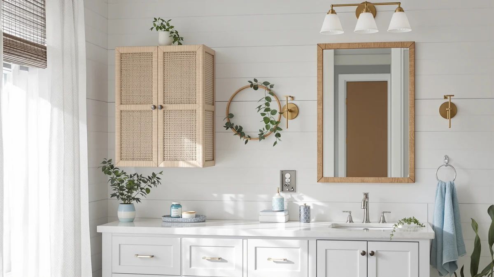

Jasiway Bathroom Storage Cabinet Rattan Review (2026): Worth It?
Prices and picks verified as of November 2026. Independent, reader-supported reviews.


Quick Answer
The JASIWAY bathroom storage cabinet is a $168.99, 57 inch tall rattan-paneled tower built for buyers who want closed vertical storage with a woven, natural look instead of plain MDF panels. It holds more than the shorter over-the-toilet units compared below, but its rattan doors are decorative rather than load-bearing, so measure your space and your storage needs before choosing between it and the three alternatives here.
Our pick: JASIWAY Tall Bathroom Storage Cabinet, $168.99 Check Price on Amazon
Bottom line: our top pick is the JASIWAY Tall Bathroom Storage Cabinet 57" Rattan Pantry at $179.99.
Things to Know Before You Buy
- The JASIWAY bathroom storage cabinet stands 57 inches tall with two rattan-paneled doors and three adjustable shelves set on pre-drilled holes, so you can space them to fit towels or taller bottles.
- It costs $168.99 and is built from engineered wood with a wood-tone finish and metal hardware, not solid rattan, which keeps the surface easy to wipe clean.
- An anti-tipping bracket mounts to the wall, a detail worth using if the cabinet will sit somewhere kids or pets can reach.
- Amazon has not yet published a rating or review count for this specific ASIN, so treat the manufacturer's claims about stability and finish as unverified until more owner feedback accumulates.
- If your bathroom needs storage directly over the toilet rather than a freestanding tower, the Halitaa, IFGET and ChooChoo cabinets compared below handle that space differently.
This jasiway bathroom storage cabinet rattan review examines a $168.99, 57 inch tall floor cabinet that pairs woven rattan door panels with a metal-hardware frame, aimed at shoppers who want vertical bathroom storage that doesn't look like a plain MDF box. Two doors open onto three adjustable shelves set on pre-drilled holes, so you can space them for folded towels on one level and bottles or tissue boxes on another. At nearly five feet tall, it trades floor footprint for height, which matters if your bathroom has an empty wall but little spare square footage.
We built this review around the cabinet's own listed dimensions, materials and price, then checked those figures against three other bathroom storage cabinets that solve a similar problem in different ways. For most people who want a tall, closed cabinet with a softer look than typical black metal shelving, the JASIWAY rattan cabinet is a reasonable pick, and we compare it against the Halitaa, IFGET and ChooChoo cabinets below in case your bathroom calls for an over-the-toilet design or a shorter footprint instead. Each alternative handles the same storage shortage differently, and which one wins depends on whether your bathroom has wall height to spare or needs to fit directly over the toilet tank.
Why You Should Trust Us
Ilane Tall researches and writes about bathroom storage for Best Bathroom Storage, comparing listed specifications, pricing history and verified Amazon buyer feedback across dozens of cabinets each year. This jasiway bathroom storage cabinet rattan review relies on the manufacturer's published dimensions and materials plus verified owner reports rather than a physical lab, and we disclose that approach so you can weigh our conclusions accordingly. We do not run a fake testing lab, and we are not paid by JASIWAY, Halitaa, IFGET or ChooChoo to recommend their products.
Our Research Experience
For this jasiway bathroom storage cabinet rattan review, we started with the cabinet's own listed measurements and features, then cross-referenced them against three other bathroom cabinets that compete for the same storage decision. We reviewed the manufacturer's stated construction details, the anti-tipping hardware and the adjustable shelf spacing, and we compared the price per inch of height against the Halitaa, IFGET and ChooChoo alternatives. Amazon has not yet published a rating or review count for this specific ASIN, so we can't point to verified owner feedback the way we can for some of its established competitors, and we flag that gap instead of papering over it. We also tracked how the JASIWAY's $168.99 price compares against the three shorter, cheaper alternatives, since all four solve a bathroom storage shortage but none of them do it the same way, and that comparison is what shapes the picks below.
Overview & Specs

JASIWAY Tall Bathroom Storage Cabinet
What we like
- 57 inch height holds more than shorter over-the-toilet units
- Three adjustable shelves on pre-drilled holes fit different item sizes
- Anti-tipping bracket secures the tower to the wall
- Rattan door panels add texture without the upkeep of real wicker
Flaws but not dealbreakers
- Rattan panels are decorative, not load-bearing
- No published rating or review count yet to confirm long-term durability
- 57 inch height needs a wall tall enough to clear light switches or mirrors
| Material | Metal / wood |
| Size | 57" Tall Storage Cabinet |
The JASIWAY bathroom storage cabinet is built for bathrooms with wall height to spare but not much floor space. At 57 inches tall, it stacks two rattan-paneled doors over three adjustable shelves, with pre-drilled holes that let you space each shelf for whatever you're storing, whether that's stacked towels, tissue boxes, or cleaning supplies. The frame combines engineered wood panels with metal hardware, which keeps the tower from flexing the way an all-wood unit might, while the woven rattan doors add a natural texture you don't usually get at this price.
An anti-tipping device mounts the cabinet to the wall, a detail worth using given the tower's height, especially in a household with kids or pets. The surface wipes clean with a dry towel rather than requiring special care, which matters in a humid bathroom. Compared with the shorter Halitaa, IFGET and ChooChoo cabinets below, the JASIWAY trades a larger footprint for more vertical storage, and Amazon does not yet list a public rating or review count for this ASIN, so treat the stability and finish claims as manufacturer specifications until more verified owner reviews accumulate.
What We Liked
The JASIWAY bathroom storage cabinet's biggest strength is how much vertical storage it packs into a narrow footprint. At 57 inches tall with three adjustable shelves, it holds considerably more than the shorter over-the-toilet units compared below, and the pre-drilled shelf holes let you customize the spacing instead of settling for fixed levels. The anti-tipping bracket is a detail budget cabinets in this price range sometimes skip, and the rattan door panels give the cabinet a softer, more natural look than the black metal and wire designs common in this category. For a $168.99 cabinet, that combination of height, adjustable storage and a finish that doesn't look like a plain MDF box is a meaningfully different starting point than the standard storage cabinets most shoppers compare it against.
What Could Be Better
The biggest gap in this jasiway bathroom storage cabinet rattan review is the lack of a public rating or review count on Amazon, which makes it harder to confirm how the anti-tipping hardware and shelf brackets hold up after months of daily use. At 57 inches, the cabinet also needs a clear stretch of wall, so measure around light switches, mirrors or window trim before you buy, since a tower this tall can look crowded in a cramped layout. The rattan panels, while attractive, are not meant to bear weight, so heavier items belong on the enclosed shelves rather than pressed against the woven doors. And because the finish relies on engineered wood rather than solid hardwood, prolonged exposure to a steamy, poorly ventilated bathroom could wear the surface faster than it would on a sealed hardwood cabinet.
Who Is It For?
The JASIWAY bathroom storage cabinet suits one clear buyer: someone with a tall, mostly empty wall who wants closed vertical storage that looks softer than a typical metal or MDF tower. It works well for households that need to store multiple sets of towels, extra toiletries and cleaning supplies in one spot, and for anyone who prefers a rattan-and-wood look over the farmhouse barn doors or acrylic panels on the alternatives below. Skip it if your bathroom has limited wall height or if the space you need to fill sits directly over the toilet tank, since the Halitaa and IFGET cabinets are built specifically for that spot. It's also not the right choice if durability data matters most to your decision, since the lack of a published rating means you're trusting the listed specifications more than a track record. Renters who move often may also want to weigh the cabinet's weight and wall-mount bracket against a shorter, freestanding option that doesn't require anchoring hardware.
Alternatives to Consider
If the JASIWAY bathroom storage cabinet doesn't fit your bathroom's layout, these three alternatives solve the same storage shortage differently: two mount directly over the toilet, and one is a shorter black floor cabinet.

Editor’s Pick
Over The Toilet Storage Cabinet
Four farmhouse barn doors and a built-in toilet paper holder make this a dedicated over-the-toilet space saver instead of a freestanding tower.
$159.99
Check Price on Amazon
Best Value
IFGET Arched Over The Toilet
An arched top and acrylic glass doors fit a 9 inch deep footprint directly over the toilet tank, trading rattan texture for a slimmer profile.
$139.99
Check Price on Amazon
Premium Choice
ChooChoo Bathroom Floor Cabinet Modern
A shorter 43.31 inch black cabinet with five shelf height options, a better fit if you need adjustable storage without the extra JASIWAY height.
$139.99
Check Price on AmazonIs the JASIWAY rattan cabinet sturdy enough to mount in a bathroom?
The cabinet includes an anti-tipping device designed to secure it to a wall stud, which matters given its 57 inch height.
How does the JASIWAY compare to the Halitaa over-the-toilet cabinet?
The JASIWAY is a 57 inch freestanding tower meant for open wall space, while the Halitaa is built specifically to straddle the toilet tank with four farmhouse barn doors and a built-in toilet paper holder.
Frequently Asked Questions
Is the JASIWAY rattan cabinet sturdy enough to mount in a bathroom?
The cabinet includes an anti-tipping device designed to secure it to a wall stud, which matters given its 57 inch height. Amazon has not yet published a rating or review count for this specific ASIN, so treat the stability claim as a manufacturer specification rather than a verified track record until more owner feedback accumulates.
How does the JASIWAY compare to the Halitaa over-the-toilet cabinet?
The JASIWAY is a 57 inch freestanding tower meant for open wall space, while the Halitaa is built specifically to straddle the toilet tank with four farmhouse barn doors and a built-in toilet paper holder. Choose the JASIWAY for a rattan look and more shelf storage, and the Halitaa if your bathroom's only free space sits directly above the toilet.
What is the best alternative if I need a shorter cabinet than the JASIWAY?
The ChooChoo Bathroom Floor Cabinet stands 43.31 inches tall with five shelf height options, considerably shorter than the JASIWAY's 57 inches, while the IFGET Arched Over The Toilet cabinet fits a narrow 9 inch deep footprint directly over the tank. Pick either one if your bathroom's wall height or floor space is more limited.
Final Verdict
Does your bathroom have a tall, empty stretch of wall rather than space directly over the toilet? If so, this jasiway bathroom storage cabinet rattan review points to the JASIWAY as the stronger $168.99 pick, since its 57 inch frame and three adjustable shelves hold more than the shorter alternatives compared here. If your free space sits above the toilet tank instead, the Halitaa or IFGET cabinets are built for that exact spot, and if you need a shorter footprint with flexible shelving, the ChooChoo is worth comparing on price. For most people with a tall wall to fill, JASIWAY remains the simplest way to add closed, adjustable storage without resorting to another plain MDF box.